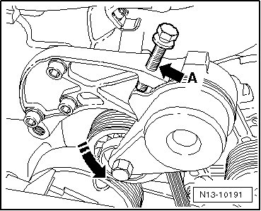
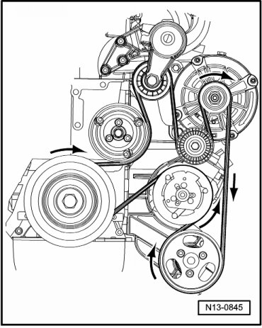

Ribbed Belt
Ribbed Belt
Special tools, testers and auxiliary items required
• Hex head screw M8 X 50
Removing
- Mark direction of rotation of ribbed belt.
- Press tensioning arm in - direction of arrow - using a suitable wrench.
- Install an M8 x 50 screw into threaded hole - A -, thereby securing ribbed belt tensioner.

• Only screw bolt in so far until the ribbed belt can be removed, otherwise the housing of the tensioning roller can be damaged.
- Remove ribbed belt.
Installing
• Ensure, before installing ribbed belt, that all ancillaries (generator, air conditioner compressor, power steering pump) are secured tightly.
• Check that idler roller turns easily.
• Note previously marked direction of belt rotation and be sure that it is seated correctly on pulley.
- Route ribbed belt and remove M8 bolt from tensioning roller.

After completing repairs always:
- Start engine and check belt direction.